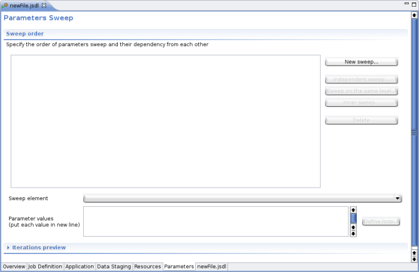

The Parameters Page provide interface for defining parameters sweep in JSDL. This is UI implementation of parameters sweep developed by JSDL Working Group. This JSDL extension is consistent with version http://schemas.ogf.org/jsdl/2007/01/jsdl-sweep of sweep definition.
Parameters defined for JSDL are presented in Sweep order section.
New parameters can be added using "New sweep..." button on the right of Sweep Order section. Pressing this button will open a dialog in which parameter's details can be defined.

From Sweeped element list choose the JSDL element you want to sweep (create parameters for). You can also define values for this parameter in Sweep values field or do it later in Sweep order section.
Please note, that Sweeped element list contains only those elements which are defined in your JSDL file.
When first of the parameters was defined user can add more parameters, but those sweeps have to refer to the existing one, so that order of values substitution can be calculated. In Sweep extension there are 3 relations between sweeped elements:
All of them are described below.
If element is defined to sweep on the same level as the referenced element this means that it's value will change (one sweep) for each change (one sweep) of referenced element value. In other words - value of this element will change together with change of value of the referenced element. This means that both elements have to have the same number of values to substitute.
To define parameter sweeping on the same level as already existing element just select the existing one in Sweep order table and press Sweep on the same level... button. In New sweep dialog, in Sweeped element field choose the element you want to create parameter from. In Referenced JSDL element field choose the referenced element.
Two elements sweeping on the same level will be listed in the same row in Sweep order table (as shown on the image below).
Parameter defined as a independent sweep will have its values sweeped after the substitution of values for referenced element is done.
For defining new independent sweep select referenced JSDL element from parameters defined in Sweep order table and press Independent sweep... button. This will open New sweep dialog in which choose the element for new parameter in Sweeped element field.
Two elements defined as independent sweeps will be presented as two tree branches on the same level in Sweep order table (see image below)
Inner sweep is just an inner loop of substitution. If parameter is defined as a inner sweep for referenced JSDL element this means that for each change of value of referenced element (one sweep) the inner parameter will have all its values substitued. In other words - for each one change of referenced parameter the inner sweep will take all its values.
To create inner sweep parameter select the referenced JSDL element in Sweep order table and press the Inner sweep... button. In New Sweep dialog that will show up, in Sweeped element field select the JSDL element you want to make into a parameter.
When parameter is defined as an inner sweep it will be presented as a child of its referenced element on Sweep order tree (as shown on a image below).
Values for sweeped parameter can be defined in two ways:
No matter which of the above methods was used - values can be added to parameter at the moment of its creation, or ater - in Values part of Sweep order section. To define (or edit) values for parameter select it from Sweep element list.
For parameter selected in Sweep element list simply type in its values in Parameter values text area. Each value must be put in new line.

For parameter selected in Sweep element list press the Define loop... button. It will open New loop dialog in which details of new loop can be provided.
Please note that Define loop... button will only be enabled if the Values textarea is empty. This is because loop can be defined only when no other values are present.
Pressing OK in Loop dialog will generate loop definition into Values text area.